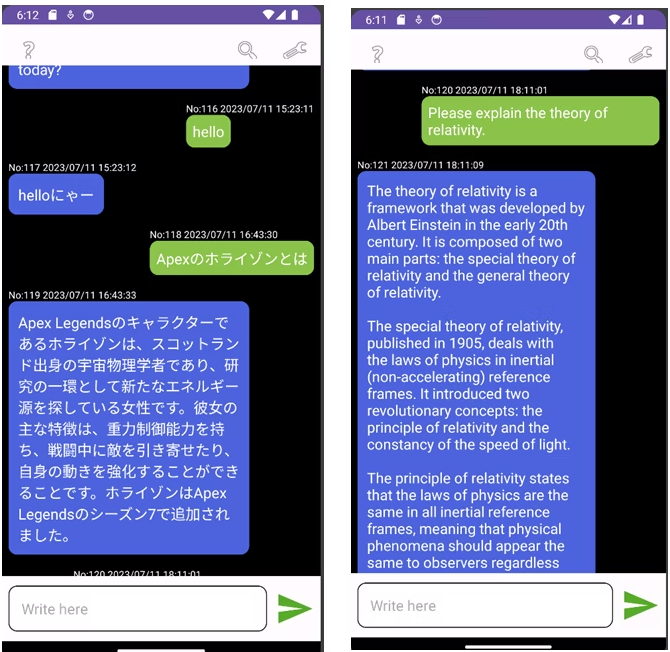
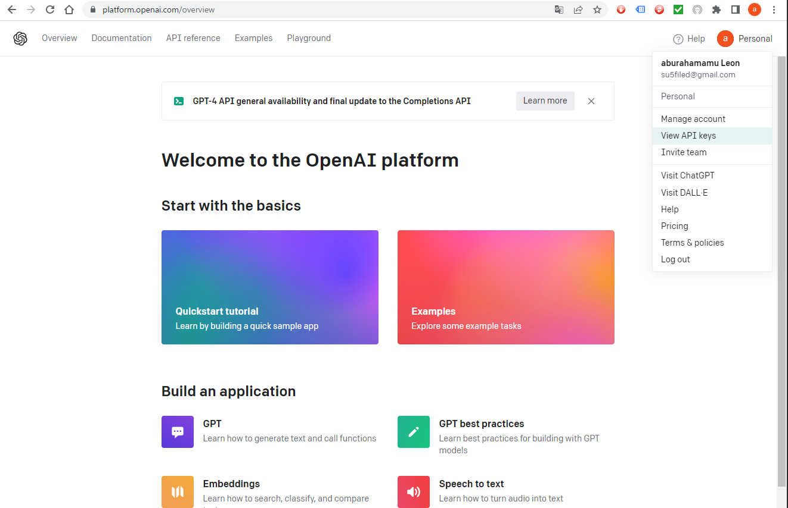
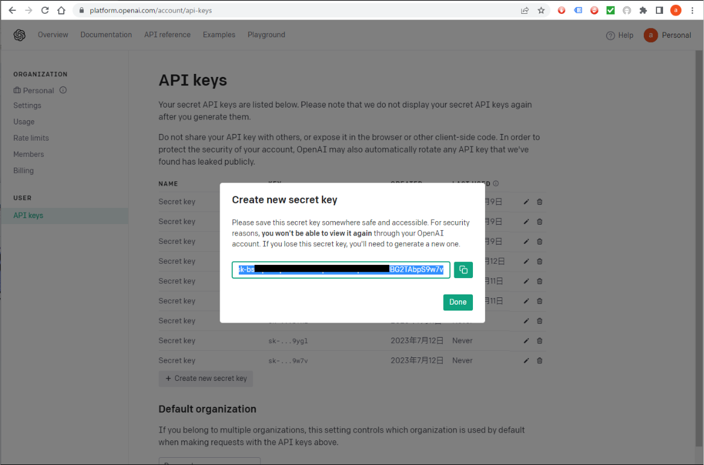
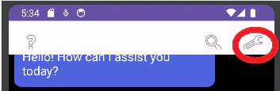
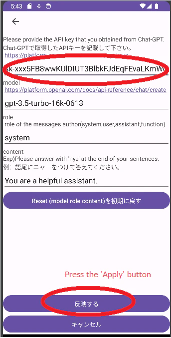

this app use chat-gpt on Android. このアプリはchatGPTをAndroidで使用出来ます。

API keyの取得
Log in to OPEN AI and click on 'Personal' in the top right corner of the screen. Click on 'View API Keys'.
OPEN AIにログインし画面、右上のPersonalをクリックし「View API Keys」をクリック

Click on '+Create new secret key' to create and copy an API key.
「＋Create new secret key」をクリックし、APIキーを作成しコピーする。
https://platform.openai.com/account/api-keys

取得したAPI Keyを設定
Start mychatgpt and press the spanner icon in the upper right corner
mychatgpt 起動し右上のスパナマークを押下

API key paste. 張り付け

Press the 'Apply' button
反映するボタンを押す。